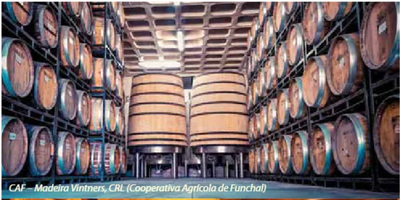
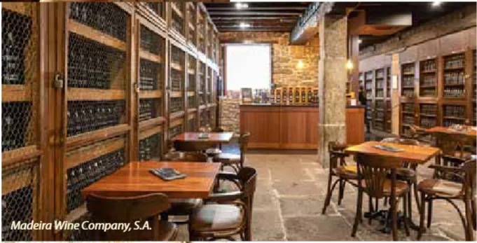
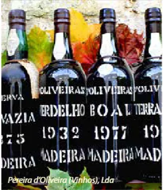

Kapitel 4 · Die portugiesischen Weinregionen
Weinregion Madeira
Kennzahlen (2022)
Rebfläche: 681 ha
Gesamterzeugung: 30.565 hl
Durchschnittsertrag: 4.500 Liter/ha
Zahl der Erzeuger: 1.755
Geschichte
Die Insel Madeira wurde 1418 von portugiesischen Seefahrern entdeckt und zog bald die Aufmerksamkeit des Infanten D. Henrique (Heinrich der Seefahrer) auf sich, der sie für den Anbau von Reben und Zuckerrohr ideal fand. Er ließ deshalb die Malvasia-Rebe von der griechischen Insel Kreta kommen, wohin sie ursprünglich aus Neapel gelangt war. Der Madeirawein erwarb großen Ruhm. Belege dokumentieren die ersten Weinexporte nach England 1456. Bis 1578 war der Weinexport bereits äußerst bedeutend und die wichtigste Einnahmequelle der Insel geworden. Mit der Heirat Karls II. von England mit der Herzogin von Bragança und Cromwells englisch-spanischem Krieg zogen die Weine der portugiesischen Inselgruppen noch mehr die Aufmerksamkeit der Engländer auf sich. Ein Wein namens Malmsey (Malvasia) wurde zum Liebling der Engländer. Mit dem Fall Konstantinopels und der Besetzung Griechenlands durch die osmanischen Türken trat der Madeirawein international an die Stelle der berühmten griechischen Likörweine, da unter osmanischer Herrschaft der Vertrieb des griechischen Erzeugnisses über die venezianischen Häfen verboten war. Mit den Fortschritten der internationalen Seefahrt gewann Madeira noch mehr an Bedeutung; der Likörwein (VLQPRD) „Madeira“ war schon im 17. Jahrhundert ein Exportprodukt. Der Ruhm des portugiesischen Weins war so groß, dass der Bruder König Eduards IV., des Mordes angeklagt und zum Tode verurteilt, als naher Verwandter des Königs die Hinrichtungsart wählen durfte: Er wählte den Tod durch Ertränken in einem Fass Malmsey. Shakespeare erwähnt den Madeirawein in seinen Stücken, besonders in „Heinrich IV.“, Teil 2. Die amerikanischen Plagen des 19. Jahrhunderts beendeten den Erfolg dieses Weins. Die Hybriden verbannten den Madeirawein in die Küche, wo sie nur noch für saure Soßen taugten. Erst jetzt, dank eines hervorragenden Umstrukturierungsprogramms der Weinberge mit Pfropfung der Sorten auf amerikanische Unterlagen und der Klonenselektion historischer Sorten in den 1980er-Jahren, haben die Vitis-vinifera-Sorten Madeiras ihre frühere ausgezeichnete önologische Qualität zurückgewonnen.

Terroir
(Quelle: Macedo, F. L., & Carvalho, M. Â. A. P. (2022). The Expected Impact of Climate in the Grapevine Culture, in Madeira Region, Portugal. Journal of Agriculture and Environmental Sciences, 11(1), 20–29.)
Klima: Die Inselgruppe Madeira gehört zur makaronesischen Subregion und liegt im subtropischen Bereich des Atlantiks. Madeira hat ein subtropisches Klima mit warmen Sommermonaten und milden Wintern. Das Klima der Nordküste ist gemäßigt und den Nordatlantikwinden ausgesetzt, daher kühler und feuchter.
Klassifikation nach Köppen-Geiger: Gruppe C (gemäßigt), Csb (warmer Sommer). Die milden Klimabedingungen der Inseln sind gekennzeichnet durch starke Winde und dank der Meeresnähe stabile Temperaturen. Nach dem Winkler-Index fallen sie in Zone IV (günstig für hohe Erträge bei annehmbarer Tischweinqualität), zu der natürlich süße Weine gehören; durch den Klimawandel könnten sie in Zone V wechseln.
Indizes des MCC-Systems (Tonietto & Carbonneau, 2004): Der heliothermische Index (HI) gilt derzeit als warm; treffen die Simulationen zu, wird er zu sehr warm. Der Kühle-Nacht-Index (CI) zeigt derzeit ideale Tiefsttemperaturen; nach den Simulationen würde die Einstufung von gemäßigten zu warmen Nächten wechseln. Der Trockenheitsindex (DI) zeigt, dass derzeit wie in den simulierten Szenarien nicht alle Gebiete unter drastischen Wasserbeschränkungen leiden müssen.
Mittlerer Jahresniederschlag: von 553 mm in Funchal bis 3.084 mm am Arieiro, 1.182 mm in Ponta Delgada und 1.527 mm in Porto Moniz. Auf den anderen Inseln fällt weniger Regen: Porto Santo hat im Mittel 362 mm im Jahr.
Geologie und Bodenkunde: Die Insel Madeira umfasst 738 km² und liegt zwischen dem 30. und 33. nördlichen Breitengrad mitten im Atlantik. Steinige vulkanische und basaltische Böden halfen der Rebe, die Insel zu erobern und die Landschaft Madeiras zu verwandeln. Rund 47 % der Inselfläche liegen über 700 Metern; dort gedeihen Wälder. Etwa 66 % der Oberfläche haben ein Gefälle von über 25 %, nur 11,5 % ein Gefälle unter 16 %. Die vielen kleinen Parzellen tragen überwiegend eine sehr intensive, vielfältige gemischte Land- und Viehwirtschaft, traditionell mit Viehhaltung und dem Anbau von Mais, Bohnen und Kartoffeln; die Reben wachsen am Rand der Parzellen an Spalieren oder Zäunen ähnlich wie im Minho. Im Mittel misst jede Parzelle etwa 0,3 Hektar; es gibt mehr als 5.000 solcher Rebparzellen. „Für diese Kultur werden die sonnigen Südhänge gewählt, wo die hochgezogenen Reben anderen Kulturen Schutz vor Wind und Wetter bieten; besonders in Meeresnähe gibt es aber auch niedrige Spaliere“ (Auszug aus dem IVV-Jahrbuch). Die Böden Madeiras sind überwiegend basaltischen Ursprungs, tonig und sauer bis sehr sauer. Sie sind reich an Mineralien, Eisen und Phosphor und arm an Kalium, was zur typischen Säure des Weins beiträgt. Wegen der Geografie der Insel sind die meisten Weinberge relativ klein. Sie liegen zwischen Meereshöhe und 800 Metern, teils auf kleinen Terrassen, den sogenannten Poios.

Erzeugte Weintypen
IG-Weine Terras Madeirenses bzw. Landweine Terras Madeirenses:
Rot, Weiß, Rosé.

DO-Weine Madeira: Likörwein unter fünf Jahren; Solera, mit Altersangabe (5, 10, 15, 20, 30 oder über 40 Jahre), mit traditioneller Angabe zum Erntejahr (Garrafeira, Frasqueira [Vintage] und Colheita) und/oder zum Herstellungsverfahren (Canteiro oder Estufagem).
DO-Weine Madeirense: Rot, Weiß, Rosé.
Regionale Kontakte
Technische Informationen: Instituto do Vinho, do Bordado e do Artesanato da Madeira – IVBAM (Institut für Madeirawein, Stickerei und Kunsthandwerk), Rua Visconde de Anadia 44, 9050-020 Funchal, Tel.: 291 224 791,
Website: www.vinhodomeideira.pt
Weintourismus: IVBAM, Rua Visconde de Anadia 44, 9050-020 Funchal, Tel.: 291 224 791,
Website: www.vinhodomeideira.pt; siehe auch: CEHA, Geschichte – Madeira-Weinroute: http://www.madeira-edu.pt/LinkClick.aspx?fileticket=lc33pxrC-Ti8%3D&tabid=1487&language=pt-PT
Kulturelle Informationen zum Wein der Region: Confraria do Vinho da Madeira – IVBAM (Madeirawein-Bruderschaft), Rua 5 de Outubro 78, 9000-079 Funchal, Tel.: 291 204 600, www.vinhomadeira.pt. Das Museu da Vinha e do Vinho (Reben- und Weinmuseum) befindet sich auf der Weinbau-Versuchsstation Campo Experimental de Viticultura do Arco de S. Jorge in der Gemeinde Santana.
Kontakt: Instituto do Vinho, Tel. 291 224 791, https://vinhomadeira.com/ivbam/conheca-o-ivbam
Hochschulen und Weinbauforschung: Universidade da Madeira, Funchal. Rektorat im Colégio dos Jesuítas (Jesuitenkolleg) und Universitätscampus Penteada (Caminho da Penteada), Tel.: +351 291 209 400,
Website: www.uma.pt
Zertifizierungsstelle: IVBAM – Instituto do Vinho, do Bordado e do Artesanato da Madeira, I.P., Rua Visconde de Anadia 44, 9050-020 Funchal, Madeira, Portugal; Tel.: 291 211 600, Fax: 291 224 791
Website: www.vinhomadeira.pt, E-Mail: ivbam@gov.madeira.pt



Informationen zu Erzeugern und Abfüllern:
http://www.ivv.min-agricultura.pt/np4/1736.html, Jahrbuch S. 258; ivbam@gov.madeira.pt (DOP Madeira, DOP-Unternehmen)
Für IGP Terras Madeirenses (Landwein) zugelassene Sorten
Rechtsgrundlage: Regionaldekret Nr. 1-A/2015/M vom 9. Januar, Ministerialerlass Nr. 40/2015 und Ministerialerlass Nr. 396/2017.

Sorten:
Rotweine: Aragonez (Tinta Roriz, Tempranillo), Bastardo, Cabernet Sauvignon, Complexa, Deliciosa, Listrão (R), Malvasia Cândida Roxa (R), Merlot, Pinot Noir, Syrah (Shiraz), Tinta Barroca, Tinta Negra (Molar, Saborinho), Touriga Franca, Touriga Nacional und Triunfo.
Weißweine: Alvarinho Lilás, Arinto (Pedernã), Arnsburger, Caracol, Chardonnay, Chenin (Chenin Blanc), Folgasão, Malvasia Bianca, Malvasia Cândida, Malvasia de São Jorge, Malvasia Fina, Malvasia Rei, Moscatel Graúdo, Rio Grande, Sauvignon (Sauvignon Blanc), Sercial (Esgana Cão), Tália (Ugni Blanc, Trebbiano Toscano) und Verdelho.
Renommierte Weingüter
in der Region: Henriques & Henriques – Vinhos, S.A.
Câmara de Lobos: Die Familie Henriques ließ sich im 15. Jahrhundert in der Gegend von Câmara de Lobos nieder. Auf 600–750 Metern Höhe legte die Quinta Grande einen neuen, 10 Hektar großen Weinberg an, den größten zusammenhängenden Weinberg der Insel. CAF – Madeira Vintners, CRL (Cooperativa Agrícola do Funchal) – 19.001 Mitglieder. Die Madeira Wine Company, S.A. ist ein führender Erzeuger von Madeirawein.
Pereira d’Oliveira (Vinhos), Lda. – Funchal
H. M. Borges, Sucrs., Lda. – Funchal; Vinhos Barbeito (Madeira), Lda.; J. Faria & Filhos, Lda.; Justino’s – Madeira Wines, S.A.